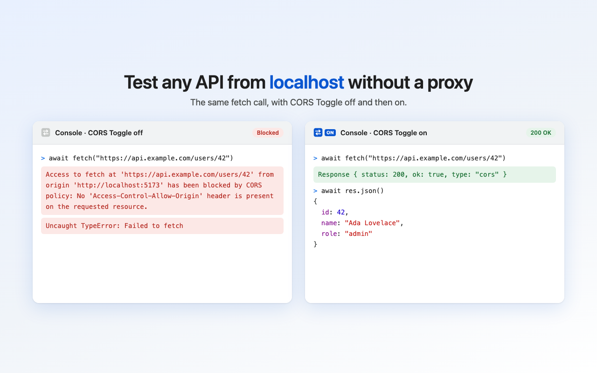

Small on purpose
One switch, a clear icon, and nothing running in the background while it's off.
One-click toggle
Click the toolbar icon to switch CORS on or off. No popup to open, no menus.
Always know the state
The icon is blue with an ON badge while active, and grey when it's off.
No tracking
No analytics and no network calls. Your on/off choice is the only thing it stores.
Test APIs from localhost
Call a third-party API from your dev server without setting up a proxy.

Install
Until the Chrome Web Store listing is live, load it from the release zip.
- Download
cors-toggle.zipfrom the latest release and unzip it. - Open
chrome://extensionsand turn on Developer mode in the top right. - Click Load unpacked and choose the unzipped folder.
- Pin CORS Toggle to the toolbar, then click it to turn CORS on.
Turn it off when you finish
While it's on, every site you open can read responses from other sites that don't need a sign-in, including services on your local network. Use it for testing, not everyday browsing. Requests sent with cookies still need the server's own CORS headers.